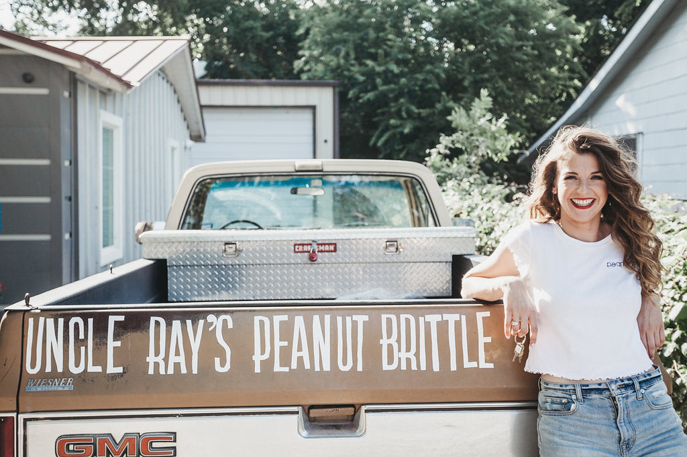
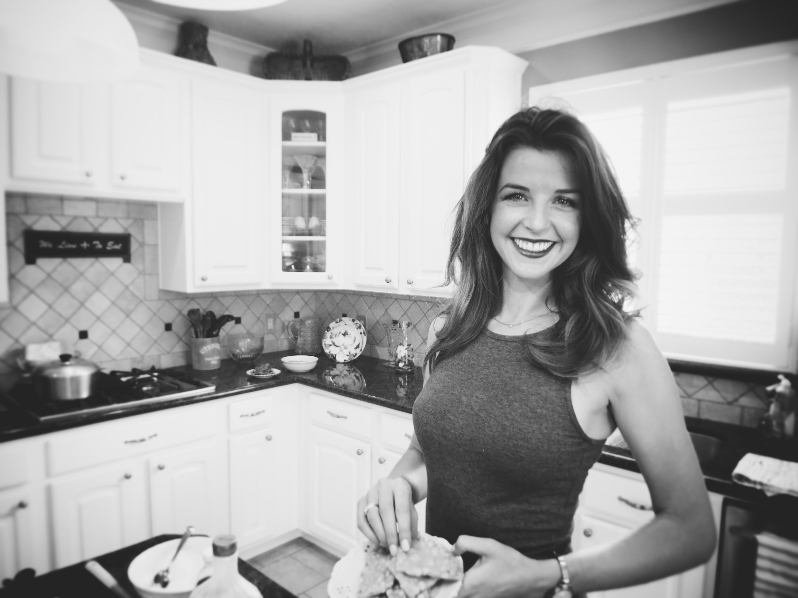
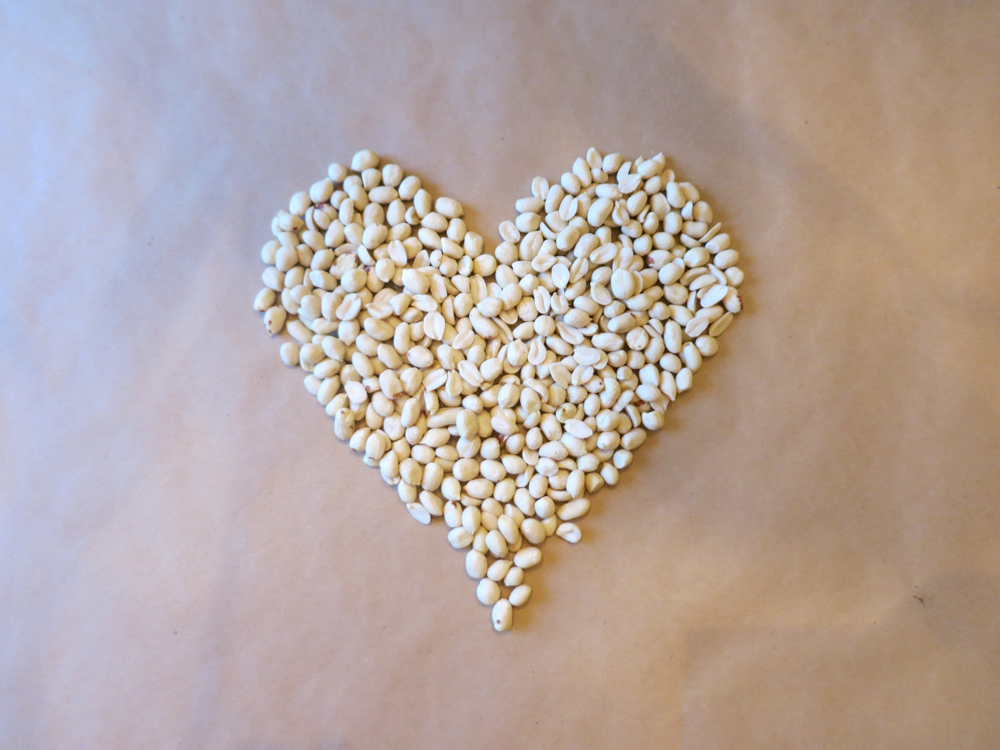
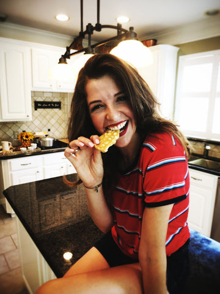

A 35-year-old family recipe, a granddaughter with a copper kettle, and a brittle business that wouldn't quit.

It started in 1990, with Great Uncle Ray and a copper kettle in his garage in central Texas.
Uncle Ray didn't sell candy. He gave it away. To neighbors, to teachers, to the mailman, to anyone who showed up at his door around Christmas. He called it brittle, but it wasn't really like the brittle you'd find at gas stations. It was lighter. Cleaner. The snap was different. The butter was real.
People started asking him for the recipe. He kept it written on the inside of a kitchen cabinet, in pencil, with the temperatures circled and a note that said "DON'T CHEAT THIS PART."
"DON'T CHEAT THIS PART."

Forty years later, his great-niece Courtney Ray inherited that cabinet door. She also inherited the recipe, the copper kettle, and the stubbornness it takes to refuse to scale a recipe down just because it would be easier.
She started Courtney Ray's Peanut Brittle in 2019, out of a 400-square-foot kitchen in Austin. The first 200 bags sold to friends and family. The next 2,000 sold at a Texas farmers' market. Then QVC called. Then Hallmark. Then H-E-B's "Quest for Texas Best" picked it up.
Now we make brittle five days a week. We still cook in copper. We still use real butter. We still don't cheat that part.
The new packaging you're holding (with the bold script, the candy-store stripes, the starburst tagline) is us turning up the volume on what was always there: a family recipe, made by hand, in small batches, in Texas, the way Uncle Ray would still want it made.
Welcome to the Brittle.
— Courtney Ray
A portion of every sale goes to causes Courtney has personally chosen and vetted. Small. Local. Often led by women. Focused on food security and after-school programs in central Texas.
We don't pick the trendy charity of the month. We pick the one that's been quietly doing the work for ten years and could use a check.
2026 partner: Central Texas Food Bank · School Pantry Program
Read the Annual Report →

If you've never tried it, start with the classic peanut. If you have, build a box and find your favorite.